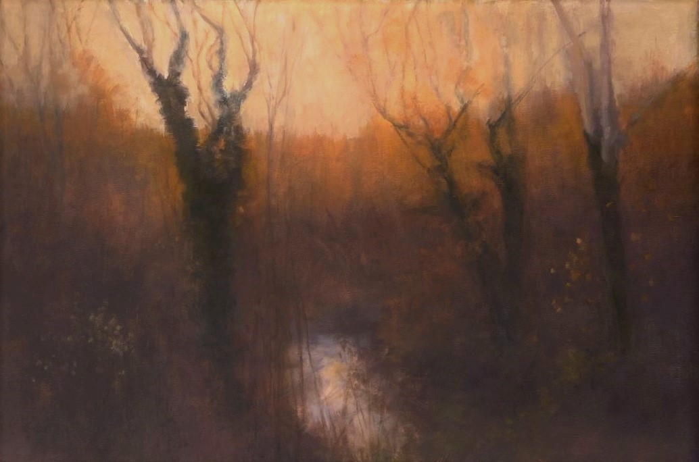

AMBLESIDE ARTIST
Deborah Squier
Pastel · Oil Painting · Landscape

FEATURED WORK
Adagio II
Deborah Squier
OIL ON LINEN · 24" × 36"
$6,800
A landscape suspended between atmosphere and memory. Softened forms emerge through layers of warm color and diffused light, creating a sense of stillness and quiet movement. The composition invites the viewer to linger in the space between what is seen and what is felt.
THE ARTIST
Where light
becomes
atmosphere.
In Deborah Squier's landscapes, the natural world is rendered through an intimate exploration of light, color and atmosphere.
Her paintings often dissolve the boundaries between earth and sky, allowing subtle transitions of tone to suggest distance, movement and the passage of time.
Working in pastel and oil on linen, Squier creates compositions that balance the recognizable landscape with a deeply atmospheric visual language.
Rather than relying on sharply defined detail, the paintings invite contemplation through softened edges, nuanced color and the quiet presence of light.
THE WORK
The quiet
language
of nature.
Across Squier's paintings, familiar elements of the landscape become studies in atmosphere and perception.
Woodlands, distant hills, shifting clouds and open horizons emerge through delicate relationships between color and light.
Her works invite a slower kind of looking, encouraging the viewer to notice the subtle beauty of changing weather, fleeting illumination and the natural world.
SELECTED WORKS
The Collection
COLLECT